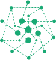

I’m the team lead for “Transparent Social Analytics” in the Department for Computational Social Science at GESIS and I develop tools in R.

more about me
Before joining GESIS, I was a Presidential Fellow at the University of Manchester in the Department of Sociology, affiliated with the The Mitchell Centre for Social Network Analysis.
I received my PhD in Computer Science at the University of Konstanz as a fellow of the Graduate School of Decision Sciences. I also have a diploma in business mathematics from Karlsruhe Institute of Technology.
research interests
My main research interests lie in the field of (social) network analysis. I have made technical and methodological contributions to topics such as network centrality, signed networks, and two-mode networks.
I am also actively involved in research around political astroturfing on social media.
See my publications for all my scientific output.
soccerverse
In an effort to combine a hobby with work, I created the football analytics website soccerverse together with some former colleagues. The project includes a world ranking of football clubs, close to the one FIFA uses for national teams. I developed most of my data science and R skills with this project, including scraping and cleaning data (i.e. collecting football results from various sources) and using the tidyverse to analyse the data.
Part of the data is available on github.
science slam
I am a semi-active Science slammer, mostly slamming about networks and disinformation on social media. Some of my slams can be found on youtube (all in german).